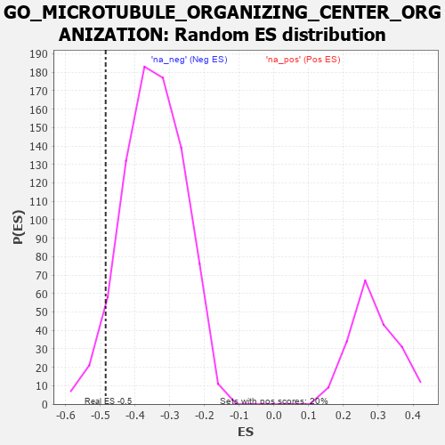

| | | Dataset | 7d |
| Phenotype | NoPhenotypeAvailable |
| Upregulated in class | na_neg |
| GeneSet | GO_MICROTUBULE_ORGANIZING_CENTER_ORGANIZATION |
| Enrichment Score (ES) | -0.48425812 |
| Normalized Enrichment Score (NES) | -1.3921572 |
| Nominal p-value | 0.05597015 |
| FDR q-value | 0.3446371 |
| FWER p-Value | 1.0 |
Table: GSEA Results Summary
 Fig 1: Enrichment plot: GO_MICROTUBULE_ORGANIZING_CENTER_ORGANIZATION
Fig 1: Enrichment plot: GO_MICROTUBULE_ORGANIZING_CENTER_ORGANIZATION
Profile of the Running ES Score & Positions of GeneSet Members on the Rank Ordered List
| PROBE | GENE SYMBOL | GENE_TITLE | RANK IN GENE LIST | RANK METRIC SCORE | RUNNING ES | CORE ENRICHMENT | | 1 | NDC80 | | | 616 | 0.590 | -0.0498 | No |
| 2 | CHD3 | | | 1232 | 0.442 | -0.1064 | No |
| 3 | E2F4 | | | 1501 | 0.390 | -0.1218 | No |
| 4 | UVRAG | | | 1831 | 0.332 | -0.1476 | No |
| 5 | NUP62 | | | 1871 | 0.324 | -0.1372 | No |
| 6 | CDK2 | | | 2226 | 0.272 | -0.1690 | No |
| 7 | BCAS3 | | | 2352 | 0.253 | -0.1728 | No |
| 8 | KAT2B | | | 2502 | 0.226 | -0.1810 | No |
| 9 | XPO1 | | | 2960 | 0.156 | -0.2312 | No |
| 10 | BRCA2 | | | 3024 | 0.146 | -0.2323 | No |
| 11 | FES | | | 3501 | 0.077 | -0.2887 | No |
| 12 | NEK2 | | | 3871 | 0.016 | -0.3344 | No |
| 13 | MCPH1 | | | 4039 | -0.014 | -0.3548 | No |
| 14 | ARL2 | | | 4254 | -0.050 | -0.3794 | No |
| 15 | KIF3B | | | 4450 | -0.085 | -0.4000 | No |
| 16 | CHMP3 | | | 4660 | -0.129 | -0.4202 | No |
| 17 | POC1A | | | 4768 | -0.151 | -0.4266 | No |
| 18 | CHMP5 | | | 4952 | -0.188 | -0.4408 | No |
| 19 | CDK1 | | | 5264 | -0.262 | -0.4676 | No |
| 20 | PLK4 | | | 5397 | -0.295 | -0.4703 | Yes |
| 21 | KIF3A | | | 5480 | -0.313 | -0.4659 | Yes |
| 22 | STIL | | | 5483 | -0.314 | -0.4513 | Yes |
| 23 | CEP76 | | | 5485 | -0.315 | -0.4366 | Yes |
| 24 | NDE1 | | | 5578 | -0.339 | -0.4321 | Yes |
| 25 | BBS4 | | | 5806 | -0.407 | -0.4415 | Yes |
| 26 | DCTN1 | | | 5950 | -0.454 | -0.4381 | Yes |
| 27 | CENPJ | | | 5968 | -0.460 | -0.4185 | Yes |
| 28 | GCC2 | | | 5994 | -0.470 | -0.3994 | Yes |
| 29 | CKAP5 | | | 6032 | -0.482 | -0.3813 | Yes |
| 30 | PLK1 | | | 6082 | -0.500 | -0.3638 | Yes |
| 31 | CETN3 | | | 6440 | -0.636 | -0.3788 | Yes |
| 32 | RTTN | | | 6497 | -0.659 | -0.3547 | Yes |
| 33 | ALMS1 | | | 6590 | -0.704 | -0.3330 | Yes |
| 34 | C2CD3 | | | 6783 | -0.802 | -0.3193 | Yes |
| 35 | CEP72 | | | 6846 | -0.839 | -0.2875 | Yes |
| 36 | CETN1 | | | 7073 | -0.978 | -0.2697 | Yes |
| 37 | CETN2 | | | 7200 | -1.070 | -0.2351 | Yes |
| 38 | CNTLN | | | 7557 | -1.484 | -0.2098 | Yes |
| 39 | CROCC | | | 7639 | -1.628 | -0.1431 | Yes |
| 40 | MDM1 | | | 7691 | -1.742 | -0.0672 | Yes |
| 41 | PKD2 | | | 7822 | -2.167 | 0.0188 | Yes |
Table: GSEA details [plain text format]

Fig 2: GO_MICROTUBULE_ORGANIZING_CENTER_ORGANIZATION: Random ES distribution
Gene set null distribution of ES for GO_MICROTUBULE_ORGANIZING_CENTER_ORGANIZATION